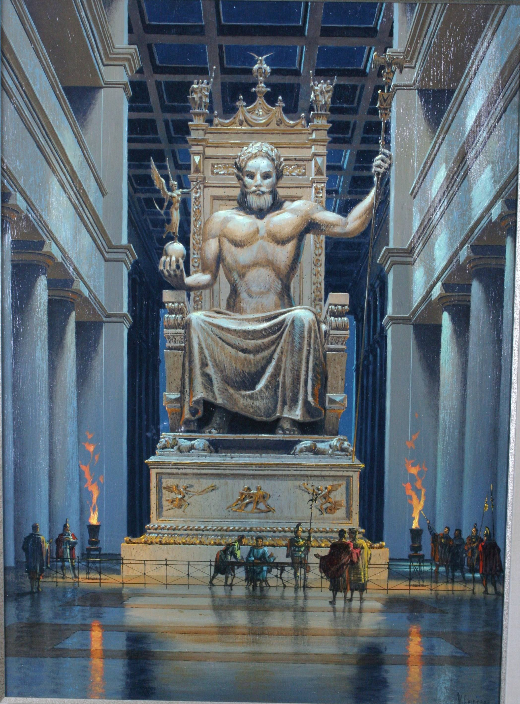
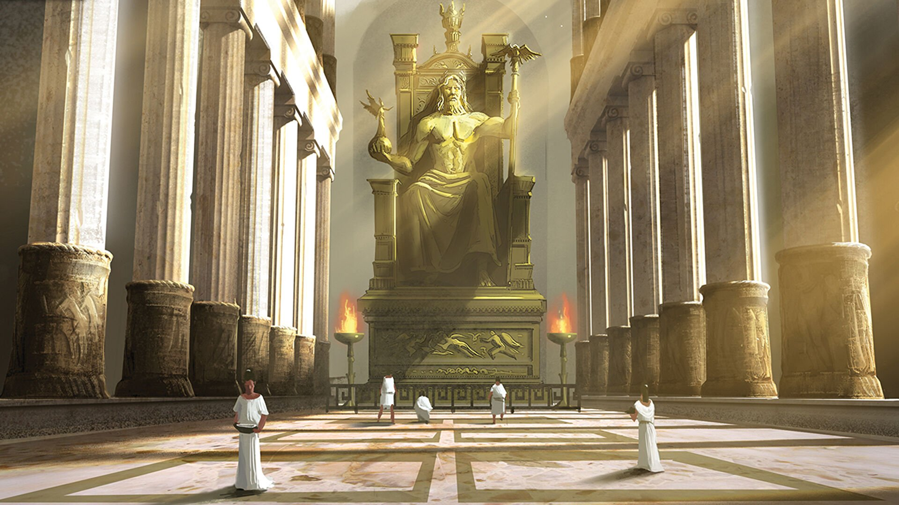
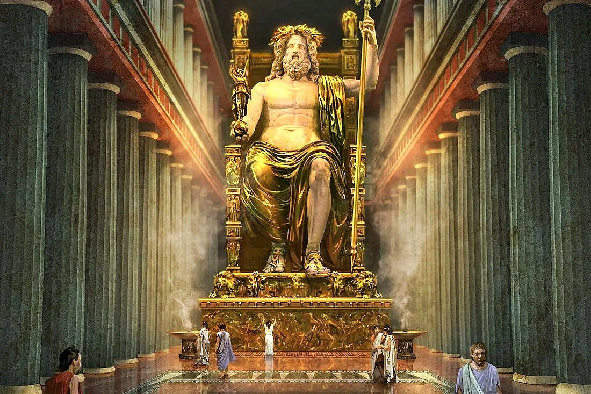
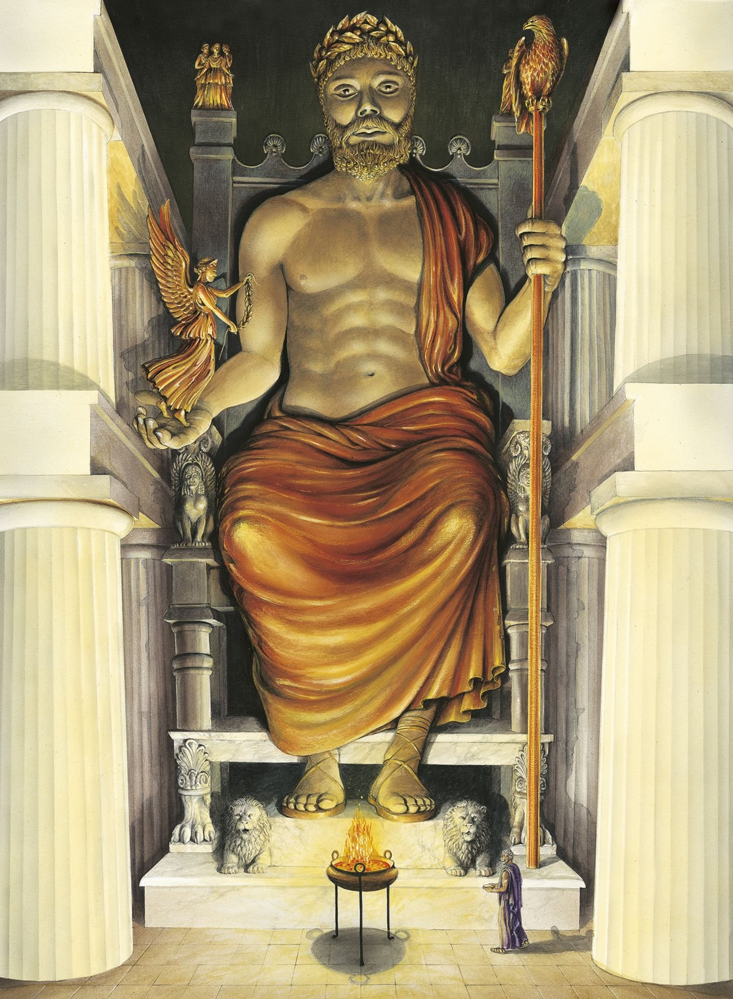
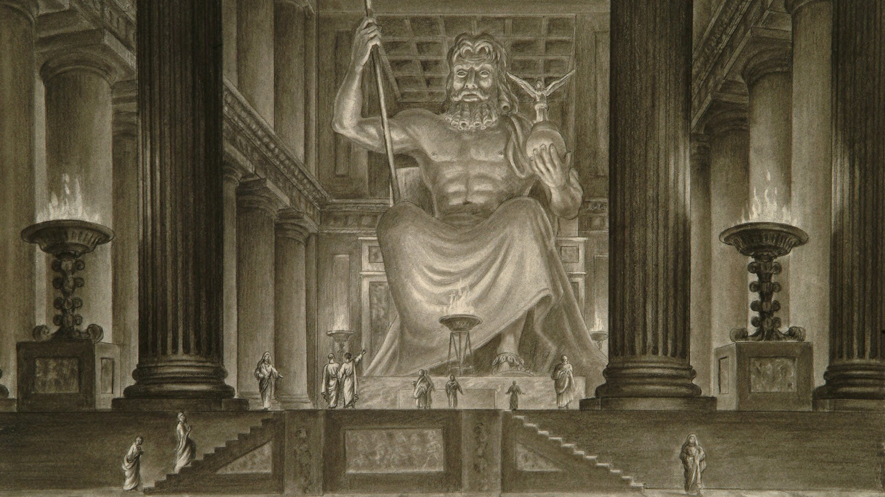

-
Статуя Зевса в Олимпии
-





Статуя Зевса в Олимпии — единственное из Семи чудес света, которое
располагалось в материковой части Европы (в городе Олимпия). Статуя Зевса в Олимпии — третье чудо света Древнего
мира. Была воздвигнута в V веке до нашей эры. Она была изготовлена из золота, дерева и слоновой кости, в так
называемой хрисоэлефантинной технике. Мраморный храм Зевса превосходил по размерам все существовавшие на тот
момент храмы.
Олимпийские игры, проводившиеся вот уже 300 лет в честь бога Зевса, пользовались огромной популярностью у народа.
Несмотря на это, в Греции не было главного храма Зевса и лишь в 470 г. до н. э. начали собирать пожертвования на
его строительство.
Весь храм, включая крышу, был построен из мрамора. Массивную крышу здания размером 27 на 64 м поддерживали 34
колонны, выполненные из известняка. Каждая была высотой в 10,6 метра и толщиной более 2 метров. Статую Зевса
возвёл Фидий. На мраморных фронтонах и наружных стенах храма располагались плиты с изображениями 12 подвигов
Геракла. Бронзовые двери высотой в 10 метров открывали вход в культовое помещение храма.
В V веке до н. э. граждане Олимпии решили построить храм Зевса. Величественное здание возводилось между 466 и 456
годами до н. э. Оно было сооружено из огромных каменных блоков. В течение нескольких лет после окончания
строительства в храме не было достойной статуи Зевса, хотя довольно скоро решили, что она необходима. В качестве
создателя статуи был избран знаменитый афинский скульптор Фидий.